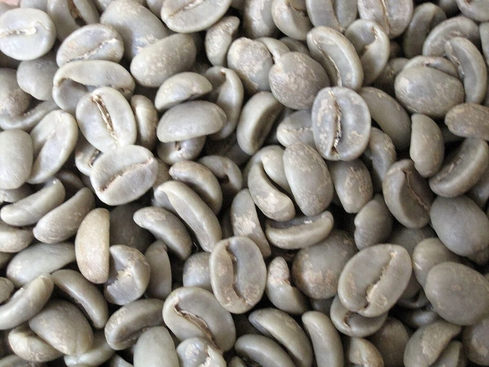

珈琲焙煎・カフェ / 群馬県館林市
銀豆直火焙煎 銀豆珈琲
群馬県館林市松原にある「直火焙煎 銀豆珈琲」のご案内ページです。営業時間やメニューは準備中。お電話とInstagramで連絡が取れます。

記帳ページ
いま確認できていること
通帳の明細のように、確認できた項目に「確認済」の印を押しました。確認できていない項目は「準備中」です。
| 摘要 | 内容 | 状態 |
|---|---|---|
| 店名 | 直火焙煎 銀豆珈琲 | 確認済 |
| 業種 | 珈琲焙煎・カフェ | 確認済 |
| 所在地 | 〒374-0016 群馬県館林市松原2丁目21-1 | 確認済 |
| 電話 | 0276-56-4284 | 確認済 |
| @ginzu.coffee0316 | 確認済 | |
| 営業時間 | 準備中 | 未確認 |
| 定休日 | 準備中 | 未確認 |
| メニュー・価格 | 準備中 | 未確認 |
| ご予約 | 準備中 | 未確認 |
| 駐車場 | 準備中 | 未確認 |
制作側の連想
「銀豆」から、一冊の通帳を
屋号の「銀豆」という字面から、制作側は銀行の通帳を連想しました。このサイトは、通帳の罫線や記帳の印、ドットの印字をまねて作っています。制作側の連想で、お店の理念・由来とは無関係です。金融サービスのご案内でもありません。
3行の明細(イメージ)
銀から金茶、深い茶へ
豆の色の移り変わりを3枚の写真で並べました。いずれもフリー素材のイメージで、お店の豆ではありません。
No.01生豆のイメージ No.02金茶色の豆のイメージ No.03焙煎豆のイメージ
屋号の「直火」から
炎の頁
「直火焙煎」という屋号の字から連想した炎の写真です。お店の設備や焙煎方法を示すものではありません。